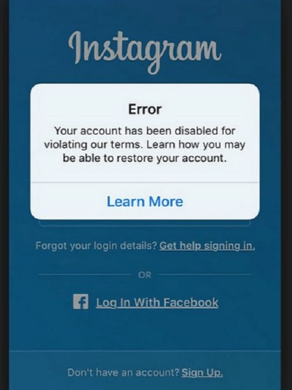
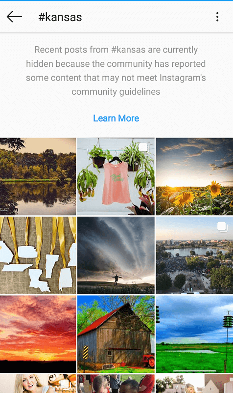
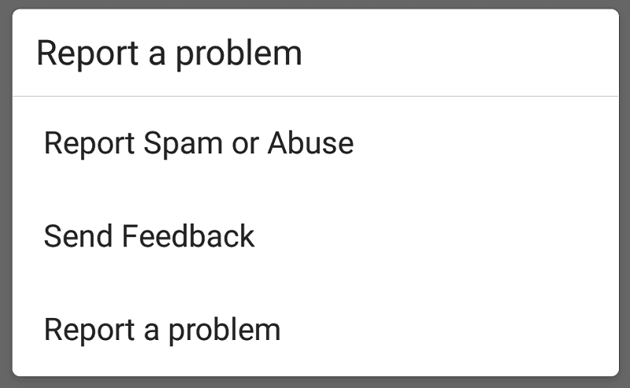

The Instagram shadowban. Most users are warned of this term at some point or another, especially those with a thriving business or influencer reputation.
But what does it mean, exactly – and how does it impact our Instagram experience?
What is the Instagram Shadowban?
If you’ve noticed a significant dip in post likes, comments, or overall engagement – many are likely to suggest that you’ve been “shadowbanned”.
Essentially, a shadowban is the platform’s supposed way of restricting your content visibility. It’s a common belief that the app does this to penalize those who violate their terms of service.
While Instagram was quick to contest this practice in mid-2018, a released Facebook statement addressed user concerns on certain posts not appearing on hashtag pages.

Their message made note of such issues while reminding users to focus on content and creativity, rather than hashtag strategies. As Hubspot states – plenty safely assumed that this was Instagram’s way of admitting to a “shadowbanning” process, while not actually admitting it
The threat of a shadowban thus steers user focus away from “growth strategies”, to content value and visual presence, instead. This is fairly understandable, given the app’s primary purpose. However, there are ways of efficiently growing your account while still providing genuine content – and avoiding a shadowban penalty.
What are the Effects of an Instagram Shadowban?
When you’re Instagram shadowbanned, your posts no longer appear in hashtag searches, people’s feeds, and the Explore page.
Profiles therefore suffer from low engagement, making it hard to build their brand and following.
The constant changes to Instagram’s algorithm, however, can also be to blame. Between changing how user posts appear on your feed, to the current “experiment” of removing Instagram likes; these developments in content delivery could also be hurting your engagement.
Professional Instagrammer and consultant, Alex Tooby, claims that accounts often experience an engagement decrease of “up to 50% or more”.
Needless to say, there may be other factors at play that hinder your Instagram growth. However, if you’re suspicious of being a shadowban victim, we discuss some of the most common causes.
What Leads to an Instagram Shadowban?
There are various practices that get your account in trouble, though these are by far the most common faux pas.
Using Prohibited Software
Instagram has been fairly clear on prohibiting software that changes the set experience and functionality of the app. Originally, this used to include any third-party programs that promised auto-publishing, though changes have since been made to allow this.
Services like Later and Hootsuite are now allowed to post on Instagram for you, as they use Instagram’s Business API to do so. However, any software that offers direct-posting without using the Business API are violating the app’s terms of service, and are best avoided.
However, the platform has gotten tougher on one specific type of software over time: bots.
The Trouble with Bots
Instagram has emphasized the importance of user creativity and authenticity more than ever.The use of certain bot softwares, however, completely counter this objective.
Bots have been known on the platform to be spammy, often spreading meaningless and sometimes inappropriate behaviour. These can range from mildly annoying comments (often plugging their own profile or business) – to largely irrelevant, suggestive, or flat-out offensive remarks.
Courtesy of Venture Beat.
Because bots are an automated software, the original user has likely no knowledge of the actions made on their behalf. Not only does the practice clutter up the platform – it easily damages your brand reputation in the process.
The Instagress Controversy
Instagress was a once highly-popular app among Instagrammers, providing automation tools that liked, commented, and followed content on a user’s behalf.
The service ran on bots, and with its convenience and affordability, was used among up-and-coming influencers everywhere. It wasn’t until 2017, however, that the app announced it had been shut down.
Courtesy of Instagress.
While a useful tool, its consistent flaw was what most bots are guilty of: taking context into account. The result was therefore a blatant widespread of spam, giving it the quick Instagram boot.
At the same time, its mass follow/unfollow activity was another red flag for the platform, due to specific constraints set in place (as we’ll further discuss below).
Abusing Hashtags
As mentioned in their Facebook statement, Instagram prefers less obsession over hashtags and more focus on content.
As a general consensus among users, hashtag use, therefore, seems to be a sensitive area. When tagging your posts, it’s best to experiment and change up your hashtags every once in a while. Using the same ones over and over can across as spammy behavior for Instagram, putting you at risk of a shadowban.

At the same time, broadening your range of tags can also benefit the overall discoverability of your content. This allows you to tap into audiences you had yet to reach out to; and who knows – you may just come across some niche-specific tags that do wonders for your engagement.
Getting Reported
Another simple cause for a shadowban is having your content reported.
Not only that, but it puts your account at risk of being banned altogether.

User reports are an efficient way of getting Instagram’s attention. If someone flags your content, this is the quickest way for Instagram to discover any shady or inappropriate behaviour on your part. Should they find that you are violating their terms of service, you’re sure to get that shadowban penalty.
Rapid-Fire Instagram Activity
As mentioned above, another common faux pas is displaying great surges in your Instagram activity. If you’re sending out 100 (or more!) follows, likes, and comments by the hour, you’re likely using an unauthorized bot. As we all know, most of these services are frowned upon by Instagram’s guidelines.
Instagram also has set limits on specific user activities per day. This can vary depending on how old your account is – so there aren’t any hard and fast rules.
According to research by AndroidTipster, most users are granted daily “like” limit of up to 1.5x the amount of followers they have. Comments are generally restricted to about 250 a day. Follows and unfollows, however, greatly depend on the age of your account, though most users should be safe with following up to 40 users per hour – and waiting around 3 days before unfollowing someone.
How to Find Out If You’re Shadowbanned
Think Instagram has shadowbanned your content? Here are the two most common methods of checking.
Use the Triberr Shadowban Tester
One of the easiest ways of checking if you’ve been shadowbanned is by using Tribber’s shadowban analyzer.
Using their service is incredibly simple. Just enter your Instagram username into the search field provided, and the system checks through your last 10 posts for any problematic content. The process mainly examines any overused or “banned” hashtags (more on these later) to reveal any posts that might have damaged your engagement.
Courtesy of Triberr.
If these analyzed posts are error-free, you can assume your profile is safe. However, Triberr cannot guarantee their tool as foolproof method of confirming a shadowban; the service simply relies on well-researched user theories regarding the algorithm.
Courtesy of Triberr.
Only Instagram knows how this truly works – though the website is still a useful starting point. To completely sure, however, you can…
Ask a Few People Who DON’T Follow You
This may take a bit more effort, though will likely give you a more accurate answer.
Since shadowbans stop your content from surfacing on other people’s hashtag feeds, confirm with three or five users (who don’t follow you) if this is truly the case.
Simply post onto your Instagram feed using your regular hashtags, and ask these users if your post appears on their corresponding hashtag pages. If all are able to see your image – great! You’re not a victim of the shadowban.
However, according to Alex Tooby, if only a few of these users are able to see your post – your engagement may just be negatively impacted. Either way, you’re free of the shadowban, and may just need to work on your marketing strategy.
How Do I Lift an Instagram Shadowban?
If you’ve found that you have been shadowbanned, don’t panic. There are few things you can do to remedy this and prevent it from happening again.
Quit Using Shady Third-Party Apps
Being the first culprit mentioned on our list, it’s best to cut ties with any software that violates Instagram’s terms of service. They may not have gotten the Instagress treatment (yet) – but if they’re still promoting any spammy or prohibited behaviour or any kind, your account is better off without it.
You can easily check all applications tied to your account through the desktop version of Instagram. Simply log in to your account, select “Edit Profile”, and click on “Authorized Applications”.
This tab should display all apps that are currently linked to your profile. Browse through for any that look suspicious – and remove those that fit the bill.
Safe Marketing Services
Though users should generally be wary of apps and services that offer growth and automation; not all tools are bad news. Many work within Instagram’s restrictions, while still giving users that quick, authentic boost in followers, likes, and overall engagement.
Some services, like Upleap, offer to engage with other users on your behalf using actual human assistants. These “Instagram gurus” are responsible for carrying out all menial marketing tasks for you; such as liking and following content related to your niche, getting on the radar of potential followers.

Courtesy of Upleap.
While an Instagram bot, Kenji works well within Instagram guidelines, offering to simply like posts on your behalf. The service stays away from automated comments, follows, or direct-messaging. This keeps your account safe from any spam-like activity, while still boosting your profile visibility.

Courtesy of Kenji.
Finally, we’ve got Socialfollow – a platform that requires no private information or fees. Users simply sign up to the website, join a network of other profiles in their niche – and for every 10 people they follow daily, they receive 50 followers in return. It’s an easy process and is completely for free.

Courtesy of Socialfollow.
Avoid “Broken” Hashtags
Apart from overusing certain tags, there are also hashtags that have made Instagram’s blacklist.
These are hashtags repeatedly used in posts that violate the Instagram community guidelines. Such content often involves graphic, sexual, or violent images; or have associations with hate groups and organized crime. As a result, Instagram blocks any content from appearing on these hashtag pages.

However, using a banned or broken tag in your post will not only prevent it from appearing on the hashtag page – but on any of the other hashtags you’ve used, as well.
These hashtags can appear as innocent as “#date” or “#HappyThanksgiving”, so it’s crucial to do a bit of research. Socialbuddy currently has an updated list of all banned hashtags in 2019, both temporary and permanent.
Report the Problem to Instagram
While the team on Facebook and Instagram can reportedly be hard to get in contact with, many experts say it’s worth a shot.

Simply tap on the “Report a Problem” option under “Help” in your profile settings, and describe the issues you’ve been experiencing. It’s recommended that you mention your posts not surfacing on their corresponding hashtag pages, rather than noticing a dip in engagement. This keeps things more clear and technical.
Take a Break from the App
If all else fails, you can always give your Instagram app a well-deserved rest for two or three days.
The team at Later mentions that most users experience a successful shadowban lift after this period of time. While on break, it’s best to avoid any form of activity on the app – this includes comments, likes, or even logging in.
Once two or three days have passed, you can then return to your profile and continue engaging with your community as normal. Upon returning, you’re better off sticking to manual engagements for the time being. This will help you get on the app’s good side once more – you don’t want to risk the engagement you’ve just gotten back!
With the Right Practices, You Can Avoid the Dreaded Instagram “Shadowban”
Instagram is a tough platform to master, and it can get tempting to participate in black-hat practices for that easy boost in followers.
These choices, however, likely won’t pay off in the long run; and they not only cost you your visibility, but your brand reputation to boot.
By remaining genuine in your marketing efforts, you’ll build both an authentic following and avoid getting penalized by the app. Stick to being creative, unique, and honest with your methods – and you’ll see the results you’re after in time.